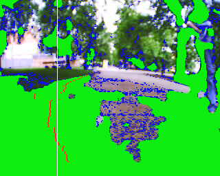

<meta charset="utf-8">
<meta name="viewport" content="width=device-width, initial-scale=1">
<title>ARBot – Robotem Rovně 2010</title>
<link rel="icon" href="../assets/img/arbot-logo.png">
<link rel="preconnect" href="https://fonts.googleapis.com">
<link rel="preconnect" href="https://fonts.gstatic.com" crossorigin>
<link rel="stylesheet" href="https://fonts.googleapis.com/css2?family=Archivo:wght@500;600;700&amp;family=JetBrains+Mono:wght@400;600&amp;family=Newsreader:opsz,wght@6..72,400;6..72,500;6..72,600&amp;display=swap">
<link rel="stylesheet" href="../assets/site.css">

<header class="sitehead">
  <a class="brand" href="../index.html"><span>ARBot</span></a>
  <nav>
      <a href="../index.html">Úvod</a>
      <a href="../pages/prezentace.html">Jak to funguje</a>
      <a href="../pages/umisteni-v-soutezich.html" class="on">Umístění v soutěžích</a>
      <a href="../pages/verze.html">Verze</a>
      <a href="../pages/model-diferencialniho-podvozku.html">Model podvozku</a>
      <a href="../pages/detekce-kraje-vozovky.html">Detekce kraje vozovky</a>
      <a href="../pages/kontakt.html">Kontakt</a>
  </nav>
</header>
<main>
  <div class="pagehead">
    <p class="eyebrow">Robotem rovně &middot; 2010</p>
    <h1>Robotem Rovně 2010</h1>
  </div>

<section class="first">
  <p>Robot prošel po minulém ročníku Robotour významnou přestavbou. Nová citlivější GPS, místo kompasu AHRS, nová optika na kameře, přepsání částí SW do asembleru, nosič na sud a spousta dalších drobností. Bohužel se začal projevovat problém tuhnutí motorových jednotek MD23. Postupně jsem zjistil, že pachatelem jsou značné napěťové špičky v 5V větvi napájení. Dvouměsíční trápení ukončila počátkem května nějaká větší špička. Nové jednotky MD25 již tento problém nevykazovaly. V pátek před soutěží se robot konečně rozjel, byly opraveny některé chyby v SW, projeta rovná i klikatá cesta u baráku a ráno hurá do Písku.</p>

  <p>Času málo, na hrdinství není prostor. Strategie byla jednoduchá kamera udrží robota na cestě a s překážkami pomohou sonary. Na Robotour to také fungovalo.</p>

  <p>Robota lehce otestovat v místních podmínkách a rychle na start 1. kola. 3, 2, 1, start. Robot se rozjel, sice místo aby se držel uprostřed cesty tak divně opilecky kličkoval od kraje cestičky ke kraji, ale dojel tak až do cíle. Supeeeeeer. Ale proč to kličkuje? Jejda zapomněl jsem krytku na kameře.</p>

  <p>V pauze mezi koly jsem zkoušel jízdu s kameru, ale výsledky nebyly dobré. Robot rychle končil mimo cestu. Algoritmus detekce cesty se mi nepodařilo opravit. Dalším pokusem bylo zapojit AHRS s nevalným výsledkem. Takže, když to jednou vyšlo tak proč ne ještě dvakrát? Robot pojede na sonary. V dalších kolech 90 a 184 metrů. Slušný výkon oceněný 2. místem. Kdyby mi to někdo vyprávěl asi bych nevěřil, ale je to pravda. Viděl jsem to na vlastní oči.</p>

  <p>Myslím, že tato soutěž byla ideálním startem do sezóny outdoor závodů robotů. Díky organizátorům za nasazení.</p>

  <figure>
    
    <figcaption>Výstup segmentace obrazu z kamery.</figcaption>
  </figure>
</section>

<section>
  <p><a href="umisteni-v-soutezich.html">&larr; Zpět na Umístění v soutěžích</a></p>
  <p class="mono" style="font-size:13px;color:var(--muted)">Text a obrázky jsou převzaté z původního webu na Google Sites; znění článku je beze změn.</p>
</section>

<footer>
  <div class="foot-in">
    <span class="mono">ARBOT &middot; AUTONOMNÍ MOBILNÍ ROBOT</span>
    <span>Zdrojový kód, vývojová dokumentace a měření:
      <a href="https://github.com/AlesRuda/ARBot3">github.com/AlesRuda/ARBot3</a></span>
  </div>
</footer>
</main>
